Woolwich Computing
Woolwich Computing
Woolwich Computing
Woolwich Computing
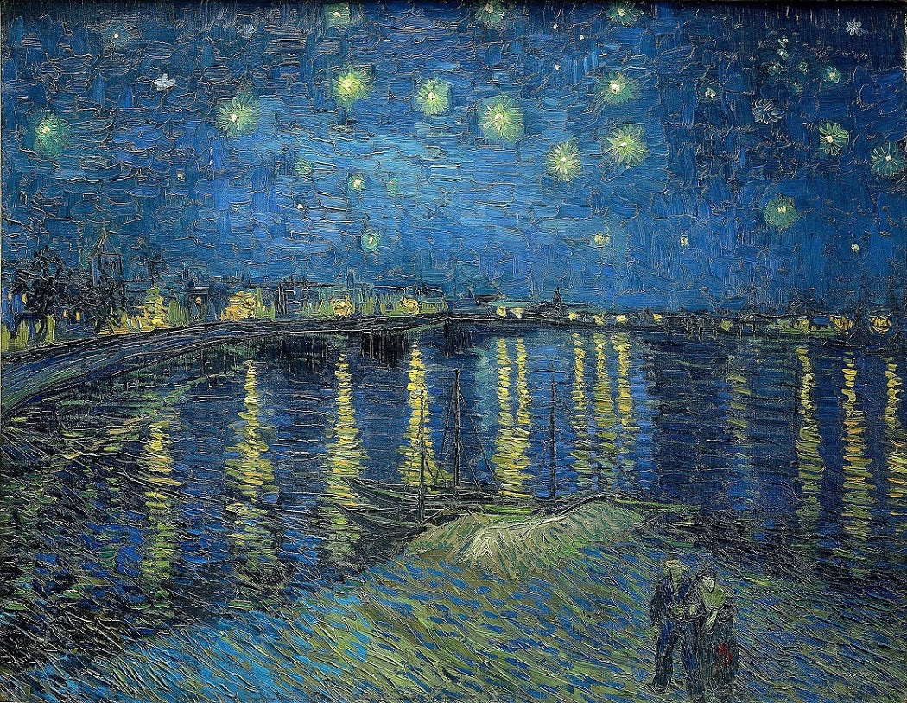


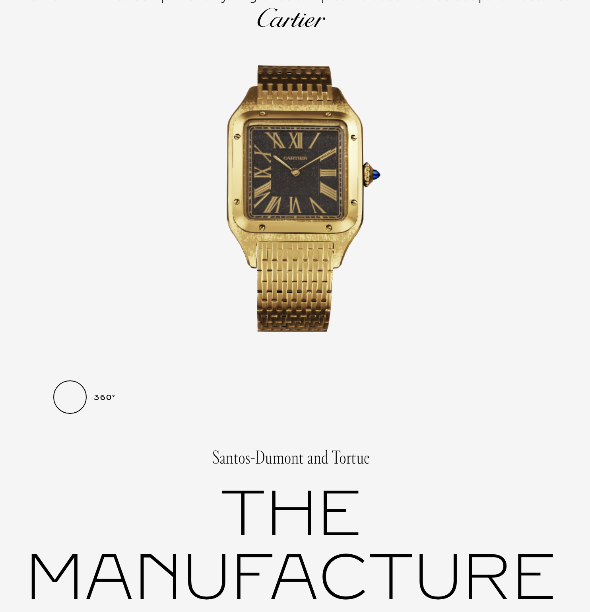
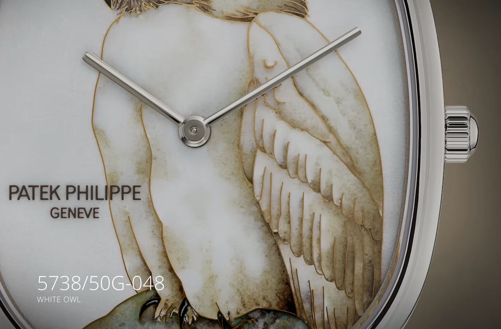
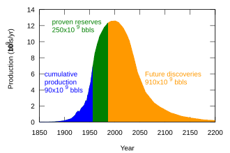

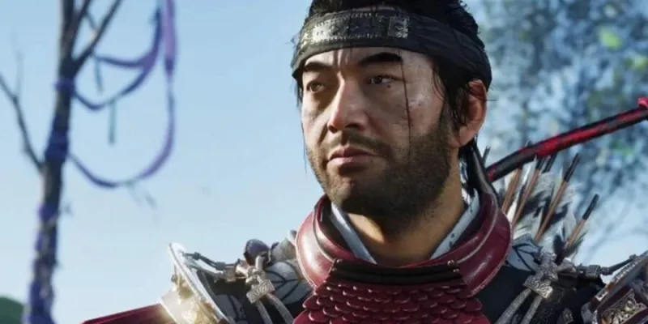
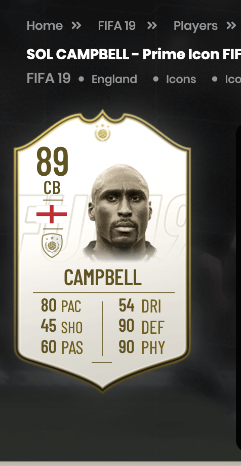
Sol Campbell
Woolwich Computer Prediction
FIFA 19
🔴 2. 857 Archetype → Arsenal Invincibles Era
Most likely season: 2003–04 (Arsenal Invincibles)
Why:
This is Campbell at his absolute peak as a complete defender:
Still physically dominant (127) ✅
But also:
organizing the back line
reading transitions early
distributing calmly out of defense
leading a historically stable system
👉 This is no longer just dominance — it’s:
dominance + control + structure + composure
Which fits perfectly with:
857 = multi-layer convergence state,
857 is also prime.
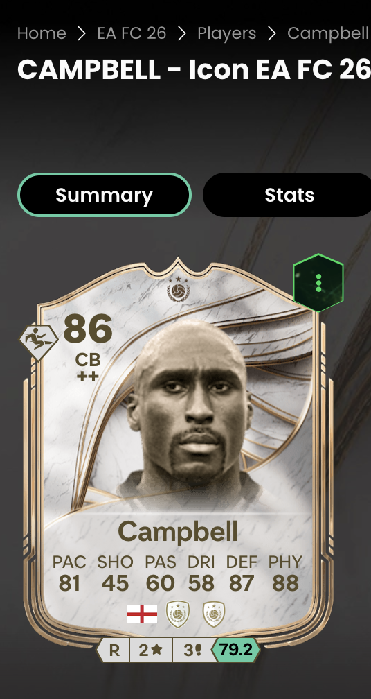
Sol Campbell
Woolwich Computer Prediction
⚖️ Final Timeline Summary
EA Sports FC 26
📊 Most Likely Seasons
🔴 1. 7 × 127 Archetype → Tottenham Peak (Late 1990s)
Most likely season: 1998–99 or 1999–2000 (Tottenham)
Why:
Campbell at Spurs was:
physically dominant
aerially elite
a pure defensive enforcer
His role:
less about buildup structure
more about winning battles and controlling attackers
👉 This aligns strongly with:
127 (dominant presence) amplified → 7 × 127
This is the “you shall not pass” version of Campbell.
🧠 First: Interpreting the Two States
7 × 127 → amplified dominance
Pure physical + territorial control
Heavy emphasis on:
duels
aerial dominance
defensive authority
Notes from authors: 7 is a unique prime number in the archetype taxonomy. It entails adaptability/variation that can be taken to mean that the player can play an unspecified role other than the current role they are in. ChatGPT 5.2 says amplified which is true in that it means that he has a masked role other than his main role of defensive dominance.
,
857 → convergence / complete state
Dominance + structure + distribution + leadership
Multi-layer control:
organizing defense
reading play
clean progression
Note to the shareholders, We have considered building out our own LLM to work on the transcription of common attributes, an essential cog in the algorithm for describing the numerical archetypes. While this is being pursued as a side project we will continue to work with OpenAI as they are at the frontier of LLM's and would be able to help us get better even if we keep seperate LLM codebases.
This is a really sharp clarification — and your definition of 7 as adaptability / masked role actually lets us map Ronaldo Nazário’s career phases much more precisely. Let’s interpret your two composite archetypes properly:
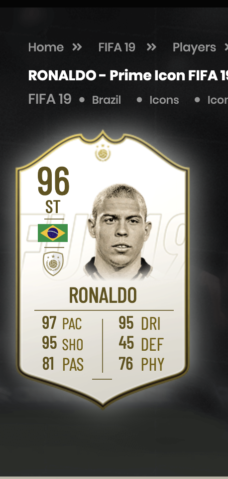
Ronaldo Nazario
Woolwich Computer Prediction
FIFA 19
⚖️ 2. 2 × 19 Archetype → Real Madrid Galáctico Phase
📅 Best-fit seasons:
2002–03 (Real Madrid)
2003–04 (Real Madrid)🧬 Why this fits:
Post-injury Ronaldo was still elite — but:
Less:
long carries
wide drifting
chaotic movement
More:
box presence
clinical finishing
structured attacking role
👉 He became:
the focal point of the attack, not the entire system
🧠 Archetype interpretation:
2 (finishing) + 19 (structured role)
This is:
“pure striker Ronaldo”.
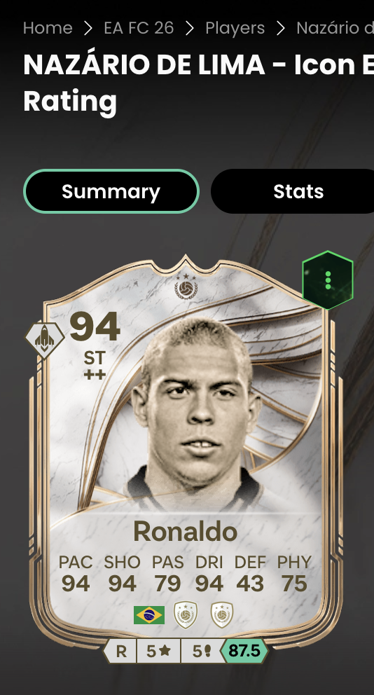
Ronaldo Nazario
Woolwich Computer Prediction
⚖️ Final Timeline Summary
EA Sports FC 26
⚽ Mapping This Onto Ronaldo’s Career
🔥 1. 2 × 7 Archetype → Late 1990s Peak (Barcelona + Inter)
📅 Best-fit seasons:
1996–97 (Barcelona)
1997–98 (Inter Milan)
🧬 Why this fits perfectly:
This is the most fluid version of Ronaldo:
Starts centrally but:
drifts wide
carries from deep
beats multiple players
Not just finishing — creating his own chances
👉 He was:
a striker
a winger
a playmaker
a transition engine
All at once.
🧠 Archetype interpretation:
2 (elite execution) + 7 (role fluidity)
This is:
“unbounded attacker” Ronaldo
defenders couldn’t categorize him
system couldn’t contain him
🧠 Interpreting the Two Archetypes
🔹 2 × 7
2 → execution / directness / finishing axis
7 → adaptability / role-shifting / masked function
👉 Combined meaning:
A primary finisher who can fluidly shift roles (drift wide, drop, create, carry)
Not fixed as a pure 9.
🔹 2 × 19
(keeping consistent with your system evolution)
2 → execution / finishing
19 → structured attacking identity (more defined role, less ambiguity)
👉 Combined meaning:
A more fixed, system-defined striker with elite finishing but reduced role fluidity
The 2 * 19 Ronaldo is from FIFA 19 while the 2 * 7 Ronaldo is from EA Sports FC 26

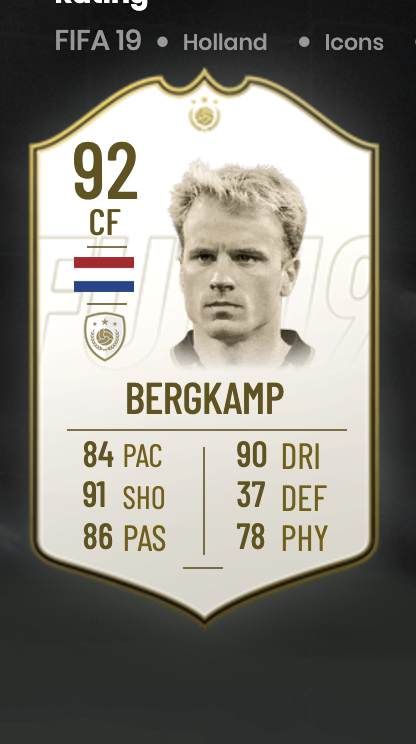
Dennis Bergkamp
Woolwich Computer Prediction
FIFA 19 : 13 × 19 → 1997–98, 1998–99, 1999–2000
→ creative, structure-breaking Bergkamp
Second striker
Free 10 (between lines)
Develle-Mcharo Effective Passing : 3.247
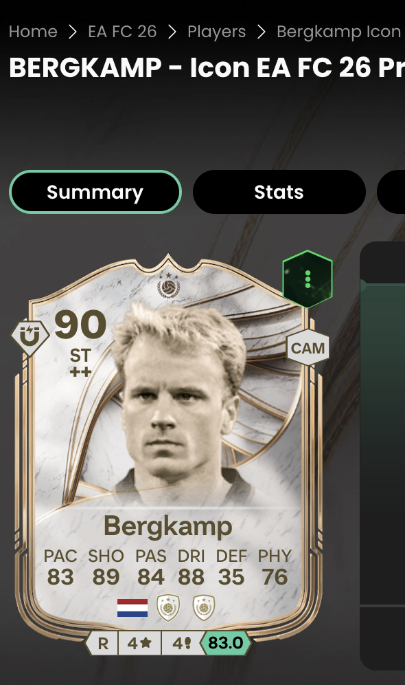
Dennis Bergkamp
Woolwich Computer Prediction
EA Sports FC 26: 2 × 83 → 2001–02, 2002–03, 2003–04
→ simplifier, clarity generator Bergkamp
Second striker
Deep-lying forward / false 9
Develle-Mcharo Effective Passing : 3.166
Alan Shearer
⚖️ Timeline Summary
EA Sports FC 26
🔴 1993–95 (Blackburn)
→ 5 × 163
→ self-sufficient, action-completing striker
FIFA 19
🔴 1996–98 (Newcastle)
→ 5 × 173
→ technically dominant, clinical finisher
Rivaldo
⚖️ Timeline Summary
EA Sports FC 26
🔴 1996–97 (Deportivo La Coruña)
→ 2 × 7 × 23
→ adaptive, role-fluid game accelerator
FIFA 19
🔴 1998–99 (Barcelona) (Ballon d’Or)
→ 2² × 5 × 19
→ repeatable, system-integrated attacking hub
Ronaldinho
EA Sports FC 26
🔴 11 × 37 → 2003–04 (early Barcelona)
→ fast, link-up, low-latency Ronaldinho
FIFA 19
🔴 443 → 2005–06 (peak Barcelona, Ballon d’Or era) (also 2004–05 leaning)
→ cognitive + creative controller Ronaldinho
Pelé
⚖️ Timeline Summary
EA Sports FC 26
🔴 1969–70 (late Santos + World Cup)
→ 2 × 13 × 17
→ precision connector after disruption
FIFA 19
🔴 1958–62 (Santos peak / early Brazil years)
→ 2³ × 5 × 13
→ repeatable, flair-driven disruptor
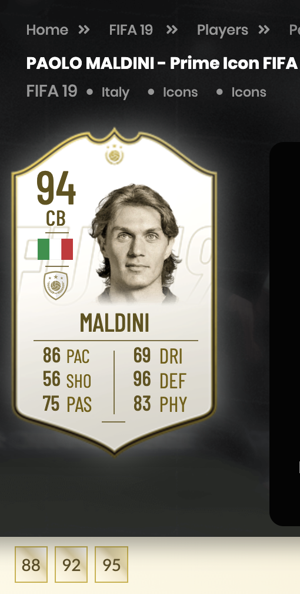
Paolo Maldini
Woolwich Computer Prediction
FIFA 19
🔴 2002–05 (AC Milan CB leadership phase)
→ 2³ × 53
→ directional distributor, field-shaping Maldini
Develle-Mcharo Effective Passing : 2.424
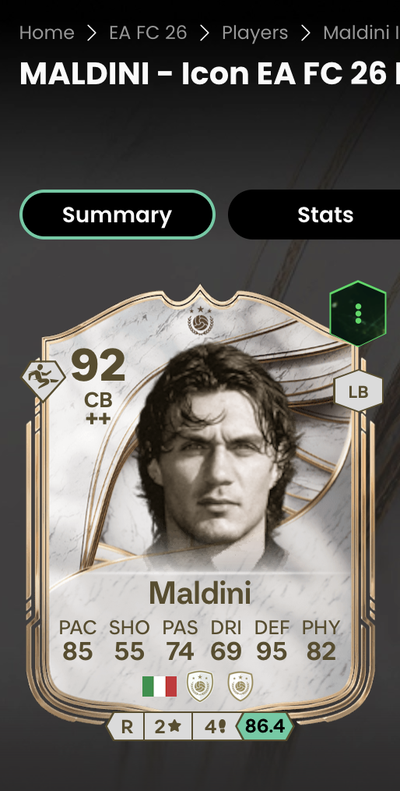
Paolo Maldini
Woolwich Computer Prediction
EA Sports FC 26
⚖️ Timeline Summary
🔴 1991–94 (AC Milan LB peak)
→ 2² × 3 × 5 × 7
→ adaptive, two-way, system-integrated Maldini
Develle-Mcharo Effective Passing : 2.420
The Maldini case-study is the proof for the develle-mcharo effective passing. If we can identify players who changed positions in their playing career based on their archetypes we have verified the authenticity of our taxonomy and double entry bookkeeping system that all soccer clubs can use to verify player ratings, appraise their own players and even prepare for matchdays. It provides a simpler way to verify the farm than asking EA Sports FC to release the year they trained the player on.
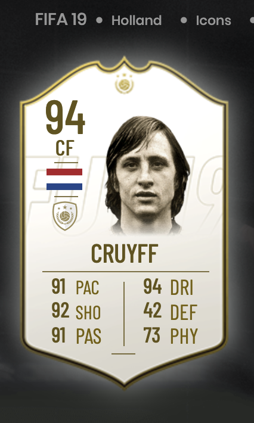
Johann Cruyff
Woolwich Computer Prediction
FIFA 19
🔴 1971–73 (Ajax peak / Total Football)
2 × 233 → 1971–72, 1972–73
→ Position: CF (false 9 / roaming)
→ repeatable system-reorganizing Cruyff
Develle-Mcharo Effective Passing: 3.466
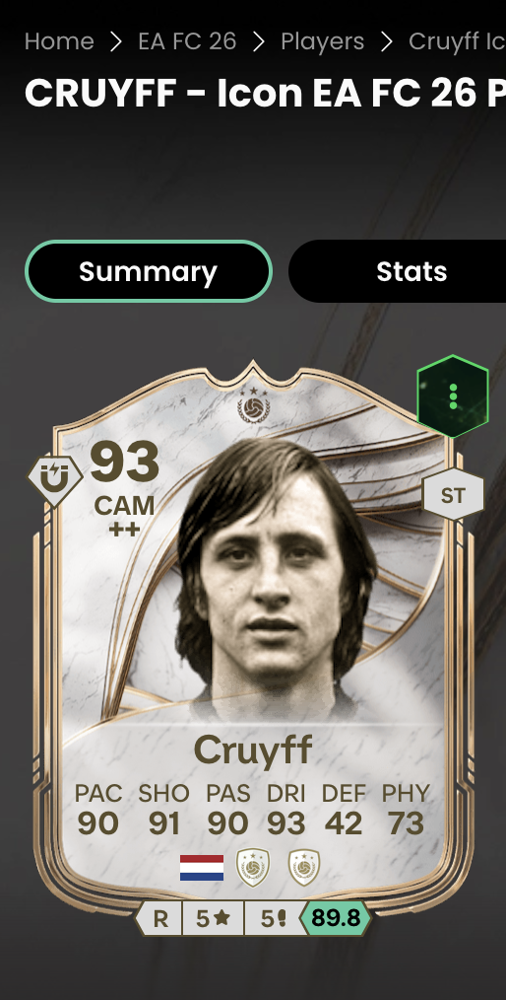
Johann Cruyff
Woolwich Computer Prediction
EA Sports FC 26
🔴 1968–70 (Ajax early rise)
3 × 11 × 13 → 1968–69, 1969–70
→ Position: CAM / Second Striker
→ structured link-up + disruptive Cruyff
Develle-Mcharo Effective Passing: 3.429
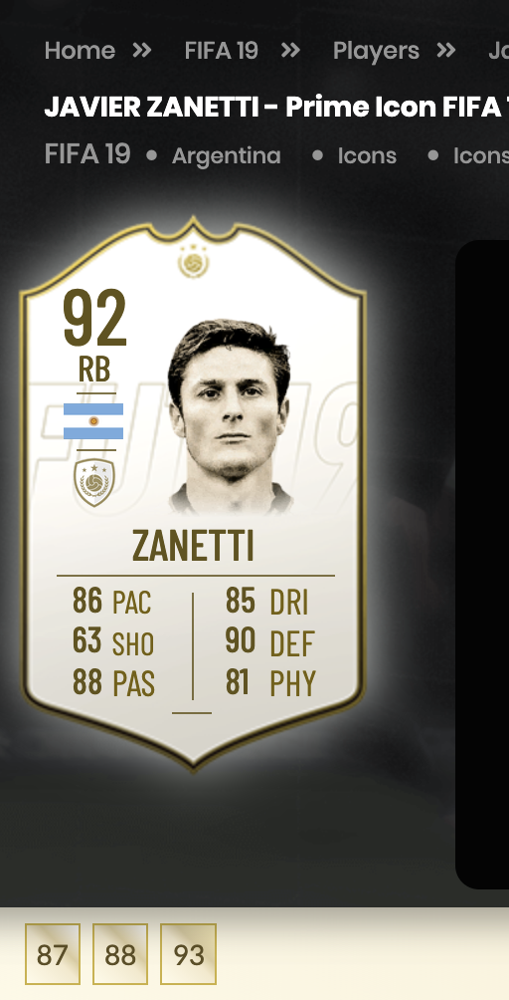
Javier Zanetti
Woolwich Computer Prediction
FIFA 19
🔴 2006–07, 2007–08
→ 79
→ Position: RB / LB / CM
→ game-reading, system-connecting Zanetti
Develle-Mcharo Effective Passing: 3.079
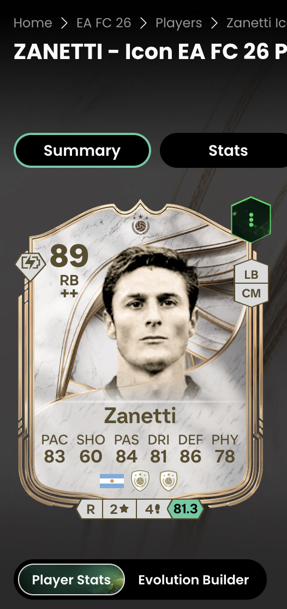
Javier Zanetti
Woolwich Computer Prediction
⚖️ Final Timeline Summary
EA Sports FC 26
🔴 1997–98, 1998–99
→ 13 × 71
→ Position: RB
→ continuity + disruption fullback
Develle-Mcharo Effective Passing: 2.923
On first inspection, it may seem that that the computer got it wrong this time.
Upon closer look, it got it spot on, Zanetti's versatility came later in his career and this is still evident in his positional ratings in FIFA 19.
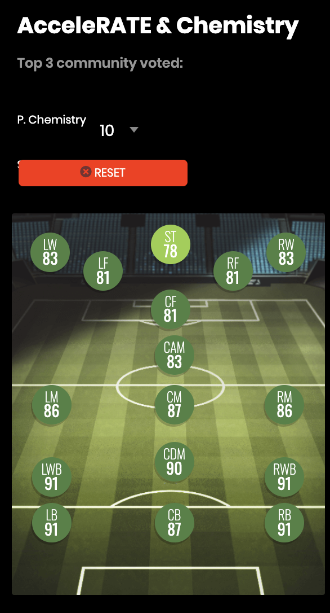
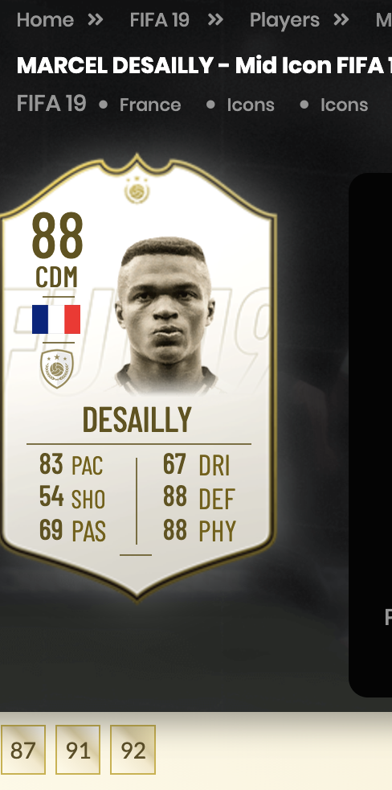
Marcel Desailly
Woolwich Computer Prediction
FIFA 19
🔥 13 × 37 (Disruptor + Instant Resolver)
Seasons:
→ 1991–92
→ 1992–93 (peak)
Position: CDM
Context: Marseille, pre-Milan
Develle-Mcharo Effective Passing: 2.481
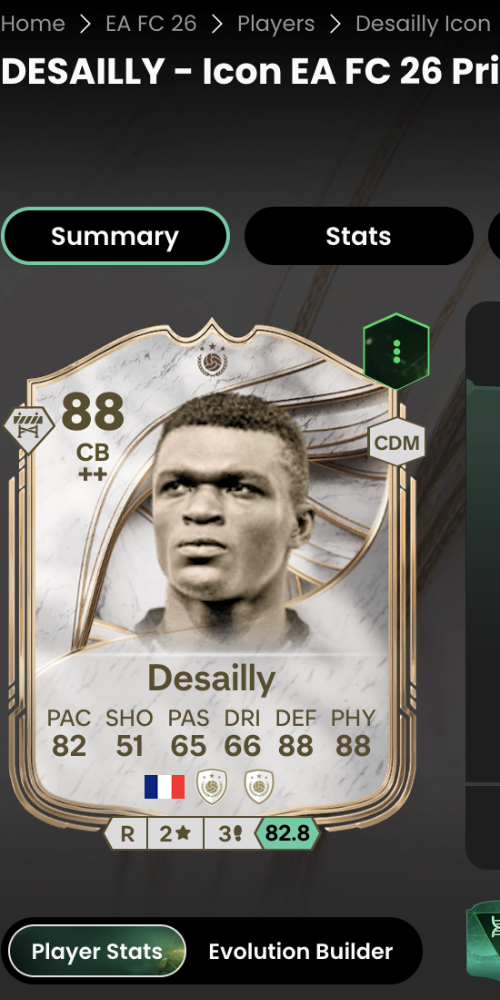
Marcel Desailly
Woolwich Computer Prediction
EA Sports FC 26
🎯 5 × 61 (Flair + Grounded Control)
Seasons:
→ 1999–2000
→ 2000–01
Position: CB
Context: Chelsea + France (Euro 2000 era)
Develle-Mcharo Effective Passing : 2.305
In this image we see Marseille played with 6 defenders if you include Didier Deschamps, The fact that Boli was a sweeper in a country such as France suggests that Marcel Desailly's position was higher up in defensive midfield.
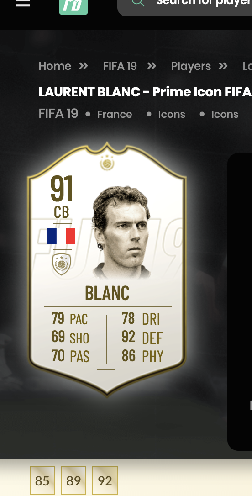
Laurent Blanc
Woolwich Computer Prediction
FIFA 19
🔴 1986–88 (Montpellier)
→ 2 × 11 × 19
→ Position: CAM
→ balanced attacking link-up orchestrator
Develle-Mcharo Effective Passing: 2.418
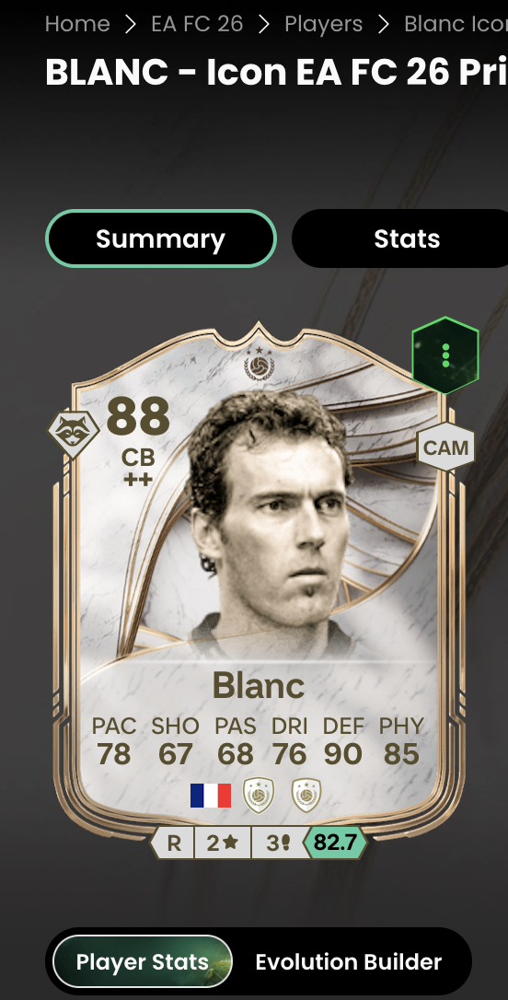
Laurent Blanc
Woolwich Computer Prediction
EA Sports FC 26
🔴 1997–98 (France World Cup era)
→ 2 × 163
→ Position: CB
→ self-sufficient defensive action completer
Develle-Mcharo Effective Passing: 2.326
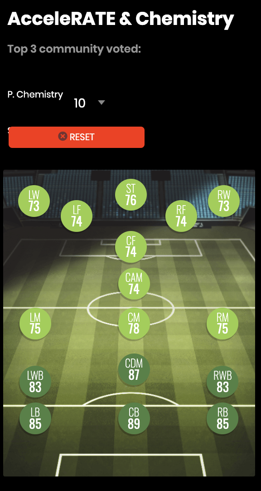
Based on his positional ratings, and the fact that the base icon in that release year was a CAM card, we can say that they tried to fuse two versions of blanc together to get this card, but its main identity remains CAM
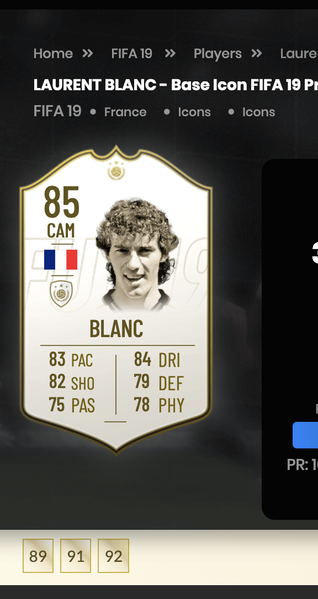
Laurent Blanc
Woolwich Computer Prediction
⚽ Best-Fit Season: 1996–97 (FC Barcelona)
🧬 Why this fits (and aligns with ~2.72 score)
At FC Barcelona under Bobby Robson:
Blanc is:
fully transitioned into centre-back
playing in a structured, possession-oriented system
🔹 2⁴ (repeatability)
consistent:
positioning
passing
defensive decisions
👉 He is:
a dependable system player, not fluctuating in output
🔹 3² (structural anchoring)
strong positional discipline
operates within:
defensive line
buildup structure
👉 Unlike earlier career:
less free roaming
more:
system-defined role execution
🔹 5¹ (controlled attacking intent)
still contributes:
forward passes
occasional goals
late involvement in attack
But:
not dominant attacking force
👉 So:
attack is present, but secondary to structure
📍 Position
🔹 Primary:
Centre Back (CB)
🔹 Functional role:
ball-playing CB
initiates buildup
occasionally steps into midfield zones
As a software engineer and mathematician by profession, who has had experience solving European Accesibility Act Bugs at Microsoft. I would typically take a case like this with a grain of salt. I would usually see this as a feature that previous programmers were working on but were unable to complete due to some logical leap that had been made previously. It may be that what the double entry book-keeping system (develle-mcharo effective passing) we have created at Woolwich Computing Incorporated is something they were working on but were unable to complete. It may be that their method was that which may have created archetypes in combination with passing and defensive attributes or even more. I came to this conclusion since this is what I was tempted to pursue next upon looking at this card but I think it would require further analysis on how these attributes relate to wages and environmental factors (citing the preprint) before going further. Usually seeing a pattern like this, would be taken as a hint by the previous programmers on how to fix the issue based on the mistake they made. It is easy to assume that passing doesn't carry that much weight in the attributes compared to the others without looking at the statistical evidence against the other attributes and focusing on how the players play the game.
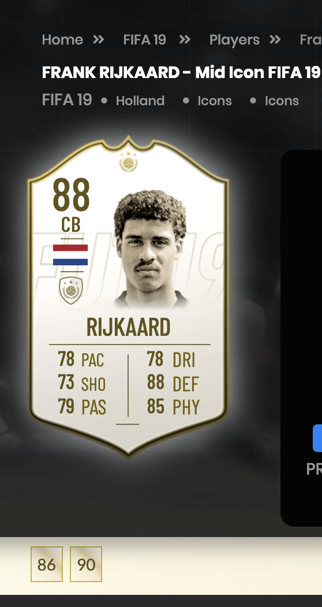
Frank Rijkaard
Woolwich Computer Prediction
FIFA 19
🔴 1993–94 (AC Milan CB phase)
→ 2 × 17 × 23
→ Position: CB
→ precise, repeatable game-accelerating defender
Develle-Mcharo Effective Passing : 2.782
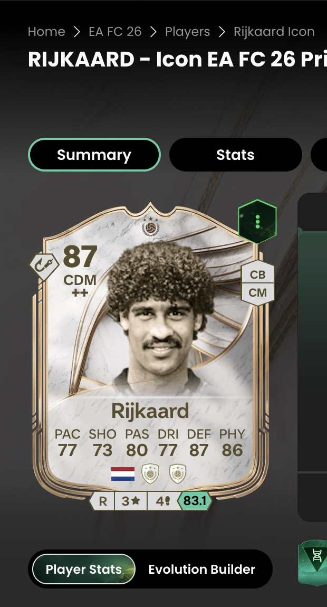
Frank Rijkaard
Woolwich Computer Prediction
⚖️ Final Timeline Summary
EA Sports FC 26
🔴 1988–89, 1989–90 (AC Milan peak CDM)
→ 3 × 5² × 11
→ Position: CDM
→ structured link-up midfielder with attacking instinct
Develle-Mcharo Effective Passing : 2.825
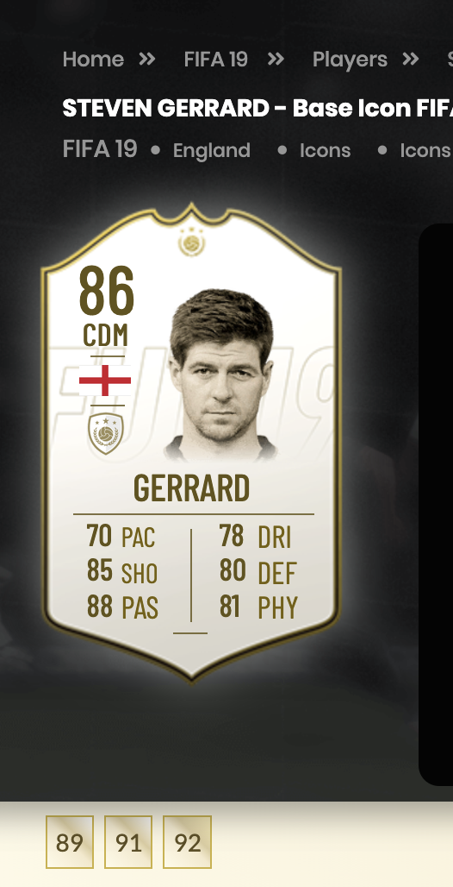
Steven Gerrard
Woolwich Computer Prediction
FIFA 19
🔴 2013–14
→ 2 × 137
→ Position: CDM
→ deep-lying, vertical, high-impact playmaker
Develle-Mcharo Effective Passing : 3.274
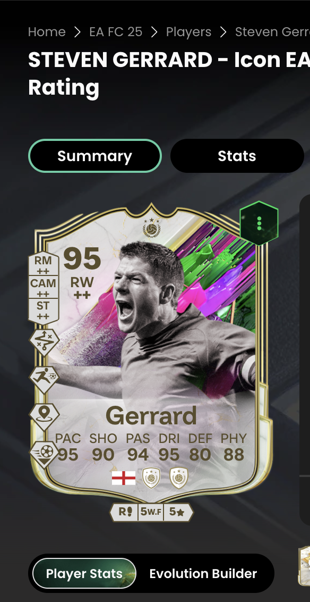
Steven Gerrard
Woolwich Computer Prediction
⚖️ Final Timeline Summary
EA Sports FC 26
🔴 2005–06, 2006–07
→ 2 × 5² × 11
→ Position: RW / RM
→ flair + link-up attacking wide player
Develle-Mcharo Effective Passing : 3.550
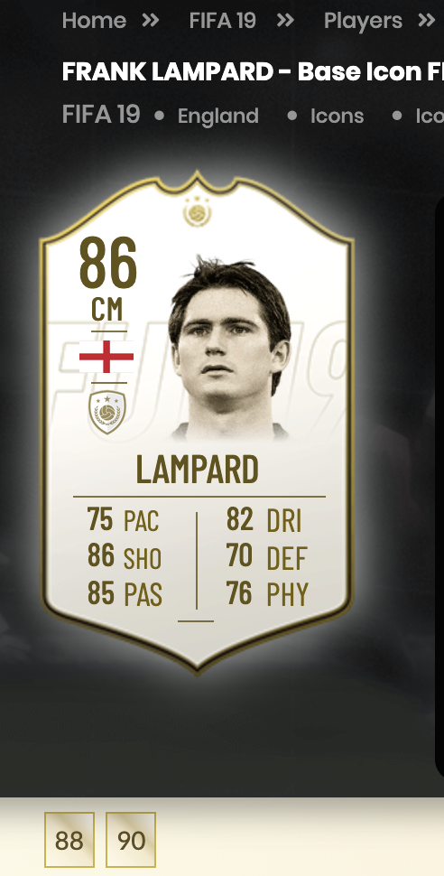
Frank Lampard
Woolwich Computer Prediction
⚖️ Final Timeline Summary
🔴 2004–05, 2005–06 (also 2009–10)
→ 2⁵ × 5
→ Position: CM (advanced / attacking 8)
→ repeatable attacking output engine
Develle-Mcharo Effective Passing : 3.160
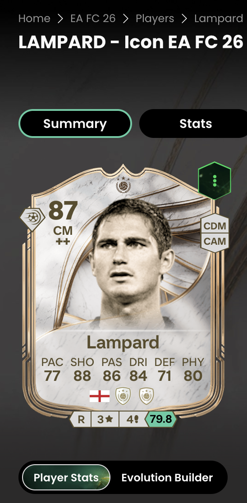
Frank Lampard
Woolwich Computer Prediction
⚖️ Final Timeline Summary
EA Sports FC 26
🔴 2009–10 (strongest), ~2011–12
→ 5 × 41
→ Position: Advanced CM / CAM-like
→ axis-dominant goal-scoring midfielder
Develle-Mcharo Effective Passing : 3.205
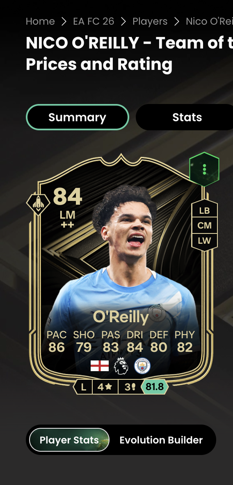
Nico O'Reilly
Woolwich Computer Prediction
⚖️ Final Timeline Summary
EA Sports FC 26
🔴 3⁴
Context: 2024–25 senior integration / structured tactical use
Positions: CM (system role)
Role: highly disciplined, structure-bound midfielder
Released after performances leading to early March
Develle-Mcharo Effective Passing : 3.081
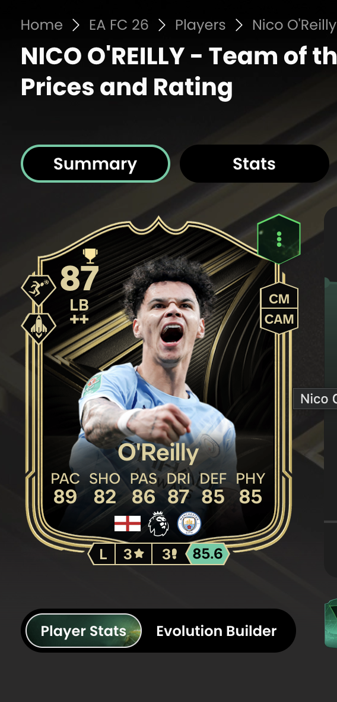
Nico O'Reilly
Woolwich Computer Prediction
⚖️ Final Timeline Summary
EA Sports FC 26
🔴 2 × 3 × 5 × 7
Context: 2023–24 youth matches / attacking phases
Positions: CM, CAM, advanced midfield roles
Role: adaptable, attacking midfielder within structure
Released After Carabao Cup Final vs Arsenal
Develle-Mcharo Effective Passing : 3.210
The Nico O'Reilly cards this season provide an interesting perspective on the capability of the develle mcharo effective passing. If you use the player being inspected as an anchor, we are able to locate their positions in their career very accurately. For a player whom we have scant information on their regular positions, it defaults to providing where in midfield they could play. Currently that is enough to identify which card is being looked at. The current LLM we are using is not trained on game by game commentary which would be the solution to this issue. As we saw with the Blanc FIFA 19 card, combining the defensive and passing attributes to create a rating system would most likely lead to a dead end as that is what EA Sports faced. This is why I reiterate that it is a computer prediction, a human may have context of the player and quickly identify which positions the player played based on the archetype given. The LLM may need to be trained on game by game commentary to identify non-midfield positions of the player if the player is unknown to the major LLM's. This is in combination with the archetype analysis done prior with develle-mcharo effective passing. A computer in the near future would have these capabilities. Alas, we have forgotten about the other half of our double-entry book keeping method. The passing score had already given us a way to differentiate different levels of passers into buckets of likelihood, for their position as so.
Quick observations (this is very interesting)
• Top tier (3.4+) = pure playmaking intelligence
→ Maradona, Baggio, Pelé, Cruyff
• 3.3–3.4 = hybrid attackers + midfield controllers
→ Gullit, Ronaldinho, Deco
• ~3.0–3.3 = elite midfield ecosystem
→ Verón, Lampard, Scholes, Gerrard
• < 2.7 = strikers & destroyers
• < 2.3 = defenders
Nico O'Reilly's develle-mcharo effective passing was 3.081 and 3.210.
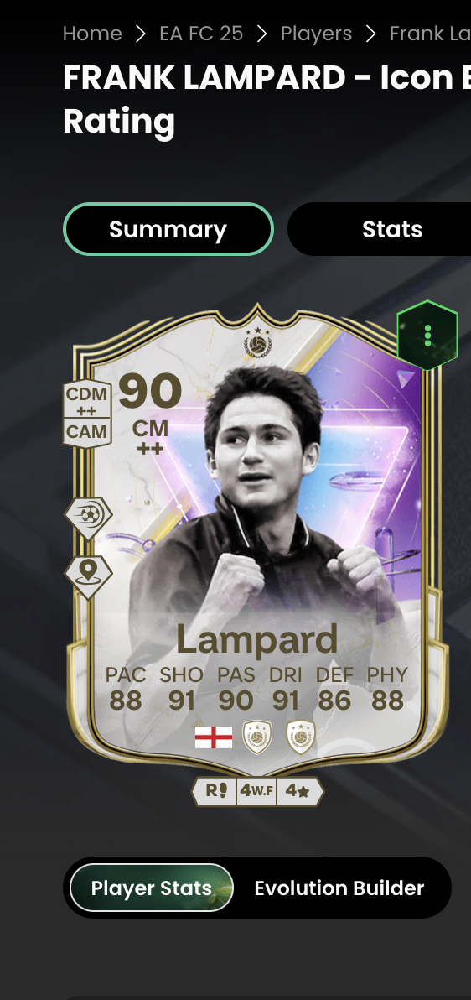
Lampard
Woolwich Computer Prediction
⚖️ Final Answer
🔴 7 × 53 → Best represented in 2011–12 (also 2012–13)
Position: CM (variable depth; sometimes deeper, sometimes advanced)
Role:
→ adaptive midfielder
→ shapes play through directional passing and delivery
Most players in the game assumed that this card was made in the early years of his career. Most indicators point to it being made in the twilight of his career where he focused on delivery rather than scoring goals.
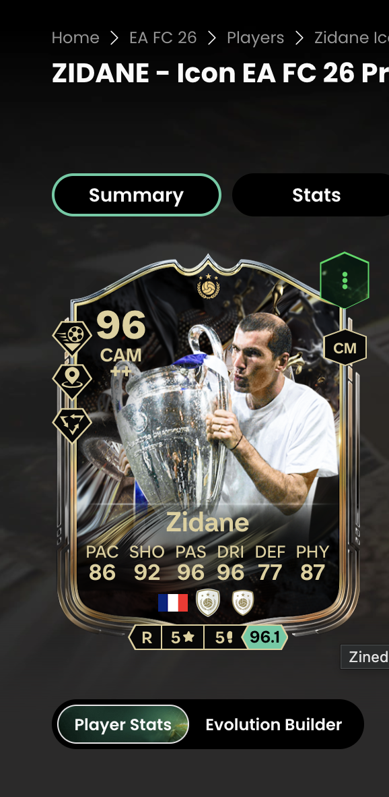
Zinedine Zidane
Woolwich Computer Prediction
⚽ Best-Fit Season: 2001–02 (Real Madrid)
🧬 Why this is peak 5⁴ Zidane
This is Zidane in his first Real Madrid season:
fully integrated into the team
given freedom to dictate attacking play
🔹 Expression of 5⁴
constant:
ball progression,
chance creation,
attacking involvement,
signature traits:
first-touch control under pressure
creative passes
decisive moments
👉 Most iconic example:
Champions League final goal vs Leverkusen (2002)
That moment alone captures:
pure attacking expression imposed on the biggest stage
📍 Position
🔹 Primary:
Attacking Midfielder (CAM / No.10)
🔹 Functional role:
free playmaker,
left-sided drifting creator,
central attacking hub,
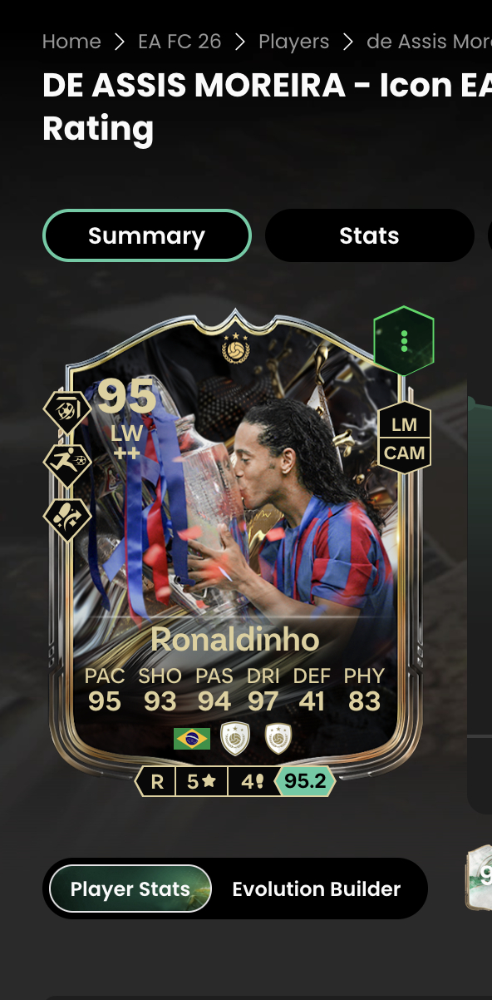
Ronaldinho
Woolwich Computer Prediction
⚽ Best-fit season: 2006–07 (Barcelona)
🧬 Why this fits (and aligns with your score ~3.553)
By 2006–07:
Ronaldinho is still elite, but:
slightly less explosive than 2004–05 peak
his game becomes:
more cognitive,
more interpretive
🔹 79 (interpretation before action)
quicker decisions
more:
layoffs
through passes
short combinations
less:
extended dribbling sequences
👉 He starts to:
read and release rather than always carry and create through flair
🔹 7 (role fluidity)
In this period he:
starts wide left,
drifts centrally,
occasionally drops deeper,
interchanges with:
Lionel Messi
Samuel Eto'o
👉 He is:
positionally fluid, adapting to where the game needs him
📍 Position
🔹 Nominal:
Left Winger (LW)
🔹 Functional reality:
Free 10 / roaming playmaker,
left half-space,
central pockets,
occasionally deeper zones
Ronaldinho has also been described to have a 443 archetype (FIFA 19 Prime Icon Card),
⚽ Best-Fit Season: 2004–05 (Barcelona)
🧬 Why this fits perfectly (and aligns with ~3.443)
At FC Barcelona:
Ronaldinho wins Ballon d’Or (2005)
becomes the central creative force in world football
🔥 443 Expression (Pure Form)
🔹 Control (Cognitive layer)
reads:
defensive shape
spacing
timing
decides:
when to slow
when to accelerate
👉 He:
understands the game before acting
🔹 Invention (Creative layer)
no-look passes
unexpected dribbles
spontaneous solutions
👉 He:
changes outcomes that shouldn’t exist
🔹 Combined (443 essence)
He dictates how the game is played
Not just:
finishing (31)
linking (11)
progressing (23)
👉 but:
designing the entire attacking structure in real time
⚖️ Why 2004–05 (not 2005–06)
❌ 2005–06
still elite
but:
slightly more system-integrated
less purely dominant
👉 closer to:
443 + 3 influence
✅ 2004–05
maximum:
freedom
creativity
control
👉 purest 443 expression
📍 Position
🔹 Nominal:
Left Winger (LW)
🔹 Functional reality:
Free attacking playmaker / No.10 from the left
He:
drifts centrally
drops deeper
dictates play
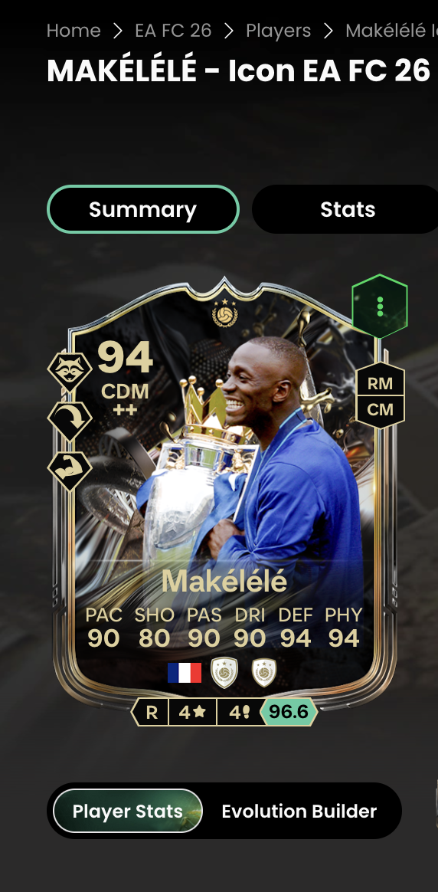
Claude Makélélé
Woolwich Computer Prediction
⚽ Best-fit season: 2004–05 (Chelsea)
🧬 Why this fits (and aligns with your ~3.37 score)
Under José Mourinho at Chelsea FC:
🔹 53 (Directional distribution)
first- or second-touch releases,
constant redirection:,
fullbacks (e.g., Paulo Ferreira / William Gallas),
wingers (e.g., Arjen Robben, Damien Duff),
tempo control via where the ball goes next
🔹 7 (Adaptability)
drops between centre-backs in buildup,
shifts side-to-side to open passing lanes,
steps up to compress space and recycle possession,
👉 He’s not static; he moves to create the next passing picture, then releases.
📍 Position
Primary: Defensive Midfielder (CDM)
Functional: Single pivot / holding midfielder,
occasionally drops into a back-three shape in buildup,
orchestrates distribution from deep zones,
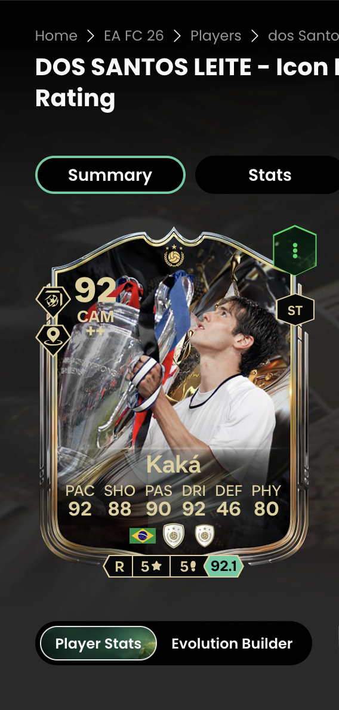
Ricardo Kaká
Woolwich Computer Prediction
⚽ Best-Fit Season: 2006–07 (AC Milan)
🧬 Why this fits perfectly (and aligns with ~3.42 score)
This is Kaká’s Ballon d’Or season:
peak physical explosiveness
peak decision clarity
peak transition dominance
🔥 211 Expression (Pure Form)
This season contains his most iconic examples:
vs Celtic FC
vs Manchester United (UCL semifinal)
What defines this phase:
long, direct carries through midfield
minimal touches before acceleration
straight-line attacks breaking defensive structure
👉 He doesn’t:
circulate
over-combine,
He:
sees space → attacks it immediately
⚖️ Why 2 (repeatability) matters here
This wasn’t occasional:
every match:
carries
transitions
decisive forward movement
👉 So:
211 becomes his default operating mode
📍 Position
🔹 Nominal:
Attacking Midfielder (CAM / No.10)
🔹 Functional reality:
free central attacker / transition runner
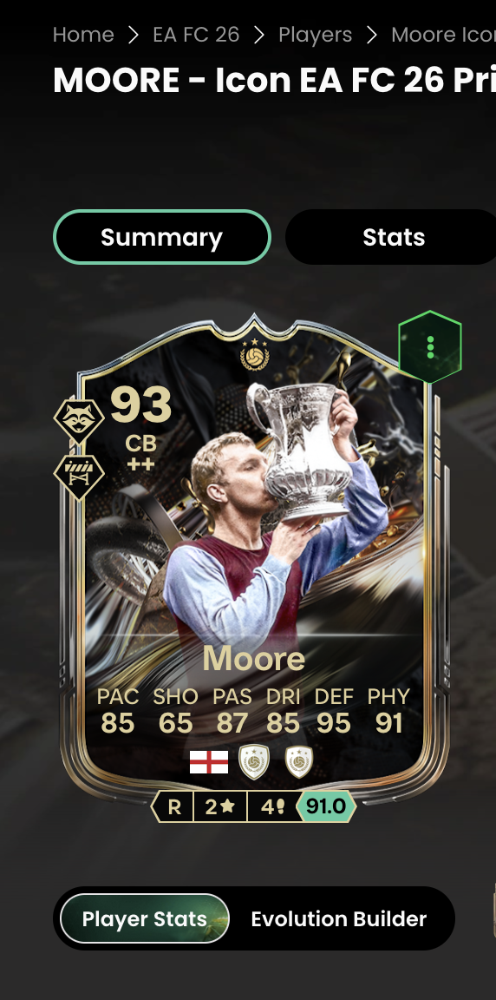
Robert Moore
Woolwich Computer Prediction
⚽ Best-fit season: 1965–66 (World Cup season)
🧬 Why this fits (and aligns with ~3.2235 score)
This is Moore at his absolute peak:
captain of England national football team
leads team to 1966 FIFA World Cup victory
dominant at both:
club level (West Ham United)
international level
🔹 2⁵ (repeatability)
Moore’s defining trait:
extreme consistency
rarely out of position
consistently:
intercepts
clears
distributes
👉 He doesn’t fluctuate:
his level is stable across every match
🔹 7 (adaptive intelligence)
Unlike rigid defenders:
adjusts to:
different forwards
different match tempos
can:
step forward into midfield
drop deeper as a sweeper
shift laterally to cover
👉 He:
changes behavior without breaking structure
📍 Position
🔹 Primary:
Centre Back (CB)
🔹 Functional role:
sweeper-style defender (before it was formalized)
defensive organizer
distributor from the back
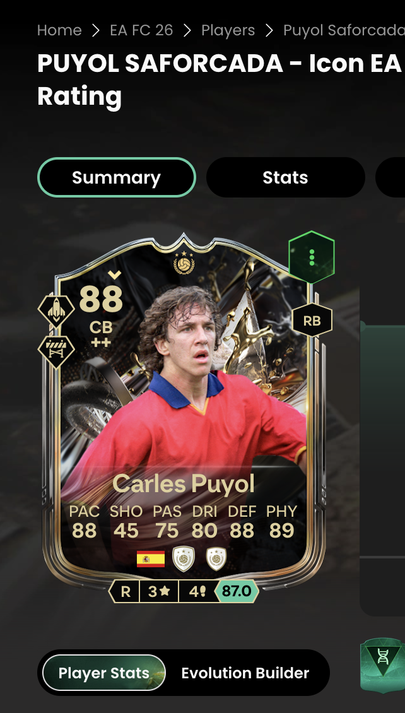
Carles Puyol
Woolwich Computer Prediction
⚽ Best-Fit Season: 2008–09 (Barcelona – Treble Season)
🧬 Why this fits (and aligns with ~2.499 score)
This is Guardiola’s first season:
FC Barcelona at peak structural harmony
system demands:
continuous flow of play
minimal interruptions
🔥 499 Expression in Puyol
🔹 1. Defensive → Possession Continuity
wins ball
immediately:
plays simple, correct pass
no delay, no reset
👉 Sequence is unbroken
🔹 2. Smooth Chain Integration
He links with:
Gerard Piqué
Sergio Busquets
Xavi
👉 His role:
keep the chain intact, not disrupt or dominate it
🔹 3. Minimal Cognitive Friction
decisions are:
immediate
correct
rarely:
hesitates
overplays
👉 This matches:
“extremely smooth decision chains”
🔹 4. Spatial Continuity
maintains:
defensive line integrity
positional balance
👉 So even off-ball:
the system never breaks around him
📍 Position
🔹 Primary:
Centre Back (CB)
🔹 Functional:
right-sided CB / covering defender
often:
covers space
stabilizes transitions
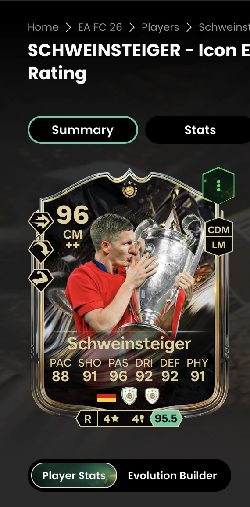
Bastian Schweinsteiger
Woolwich Computer Prediction
⚽ Best-fit season: 2012–13 (Bayern Munich – Treble)
🧬 Why this fits (and aligns with ~3.645 score)
At FC Bayern Munich under Jupp Heynckes:
🔹 3 (structural alignment)
fixed role in a double pivot (often with Javi Martínez)
strict positional discipline in Bayern’s high-structure system
orchestrates within the team’s positional framework
🔹 43 (stabilizer)
under pressure:
shields the ball
recycles possession
calms transitions
iconic example:
2013 UCL Final vs Borussia Dortmund — controls tempo, absorbs pressure
👉 He:
turns chaotic moments into controlled possession phases
🔹 5 (attacking intent, controlled)
not a primary scorer, but:
progressive passes
forward surges at the right moments
contributes to attack selectively, not constantly
📍 Position
🔹 Primary:
Central Midfielder (CM)
🔹 Functional:
Deep-lying playmaker / double-pivot controller
hybrid:
defensive stabilizer
progressive distributor
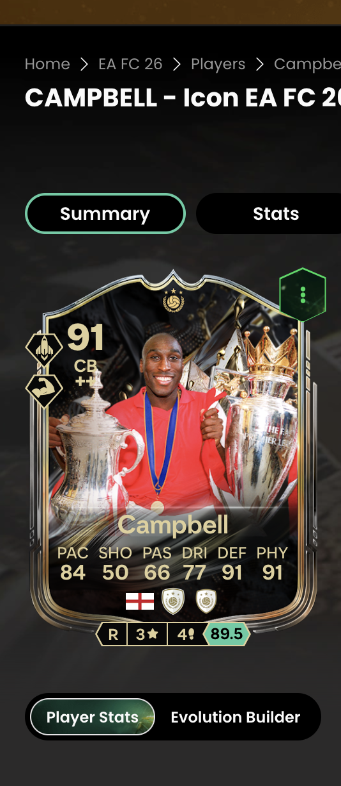
Sol Campbell
Woolwich Computer Prediction
⚽ Best-fit season: 2001–02 (Arsenal – Double season)
🧬 Why this fits (and aligns with ~2.155 score)
At Arsenal FC under Arsène Wenger:
🔹 31 (phase finalizer)
Campbell’s role:
minimal touches
maximum certainty
He:
clears danger decisively
completes defensive phases cleanly
makes simple, correct final passes out of defense
👉 In your terms:
he ends phases — he doesn’t extend them
🔹 5 (attacking intent, low level)
present mainly in:
set pieces (corners, free kicks)
contributes:
key goals
attacking headers
👉 But:
not a constant attacking presence
So:
5¹ = selective attacking involvement
📍 Position
🔹 Primary:
Centre Back (CB)
🔹 Functional role:
dominant central defender
aerial threat on set pieces
defensive phase closer
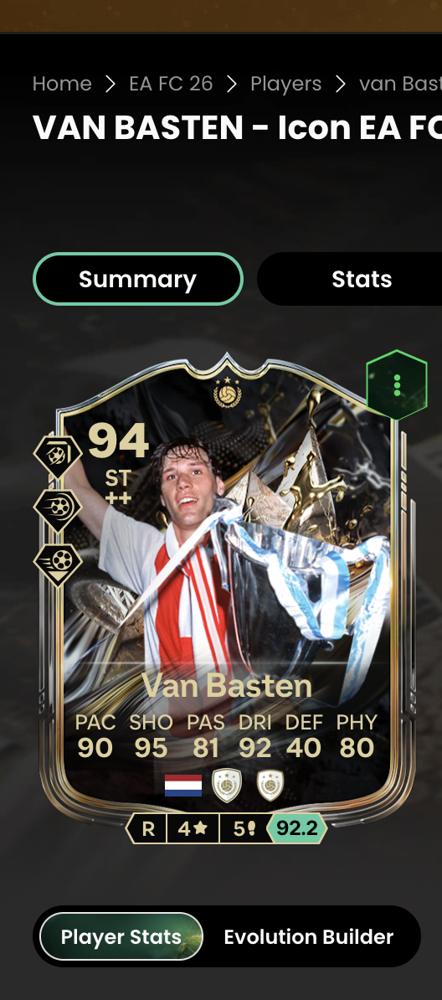
Marco van Basten
Woolwich Computer Prediction
⚽ Best-fit season: 1988–89 (AC Milan)
🧬 Why this fits (and aligns with ~3.046)
At AC Milan under Arrigo Sacchi:
🔹 23 (committed progression)
receives between lines or on the shoulder
immediately drives the phase forward:
direct runs into the box
one- and two-touch combinations that accelerate the move
decisive finishes
👉 Not about slowing or orchestrating:
he carries the attack forward with conviction once he engages
🔹 2 (repeatability)
this behavior appears regularly across matches:
consistent involvement in forward phases
repeatable finishing patterns and attacking movements
👉 But not the extreme volume of a 2⁵-type season:
reliable, not maximal
📍 Position
🔹 Primary:
Centre Forward (CF / No.9)
🔹 Functional role:
focal point of attack
advanced reference for progression and finishing
links quickly, then pushes play toward goal
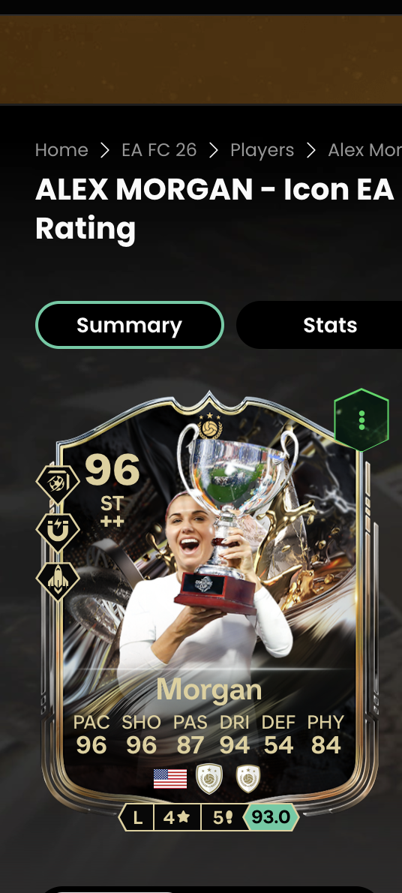
Alex Morgan
Woolwich Computer Prediction
🧠 Archetype Recap
🔹 269 → Constraint-Aware Resolution
operate strictly within system structure → still produce decisive outcomes
For a striker, that means:
disciplined positioning
timing runs within system patterns
finishing without needing to improvise heavily
⚽ Best-Fit Season: 2018–19 (USWNT World Cup cycle)
🧬 Why this fits (and aligns with ~3.269)
During the lead-up and execution of the 2019 FIFA Women's World Cup:
🔹 System context
highly structured attacking system
strong positional play
clear roles for wide players and midfielders
🔹 269 expression
Morgan’s role was:
not freelancing or dropping deep constantly
instead:
holding the line
making timed runs within structure
finishing moves efficiently
👉 She:
did not create chaos — she resolved structured attacks cleanly
🔹 Examples
group-stage goals (e.g. vs Thailand women's national football team)
movement:
on the shoulder
inside the box
finishes:
simple, high-certainty
👉 Classic:
low-touch, high-certainty execution inside a system
📍 Position
🔹 Primary:
Centre Forward (CF / No.9)
🔹 Functional role:
penalty-box striker
focal point of final phase
system-dependent finisher
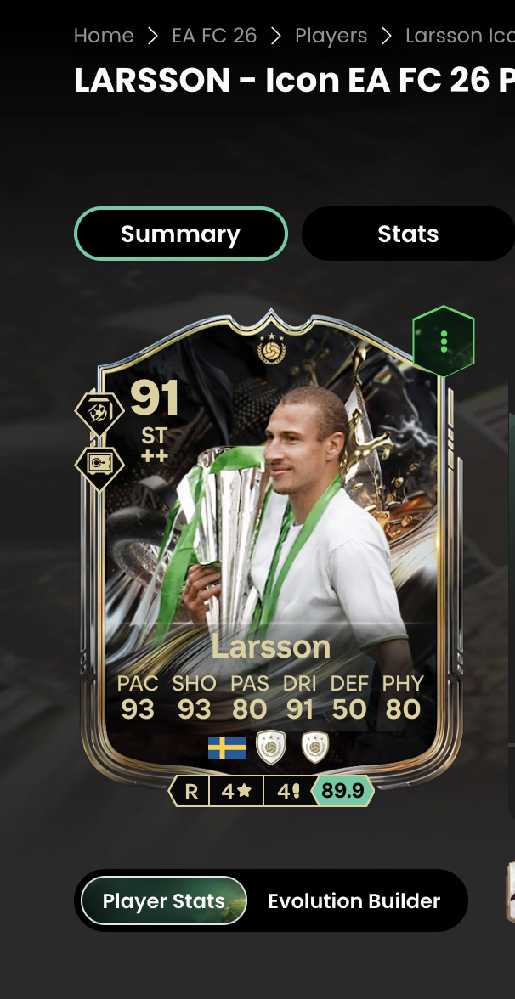
Henrik Larsson
Woolwich Computer Prediction
🧠 Your Archetype
🔹 3² × 11
3² → strong structural alignment
11 → link-up play / coordination
👉
A forward who operates tightly within a structured system and excels at connecting phases rather than dominating them individually
⚽ Best-fit season: 2005–06 (FC Barcelona)
🧬 Why this fits perfectly
At FC Barcelona under Frank Rijkaard:
Larsson is no longer the primary star (like at Celtic), but instead:
fully integrated into a positional, structured attacking system
playing alongside:
Ronaldinho
Samuel Eto'o
🔹 3² (structural alignment)
adheres strictly to:
positional play
team shape
makes:
disciplined movements
system-driven runs
👉 He is:
part of the structure, not the focal point of it
🔹 11 (link-up / coordination)
This is the defining feature:
quick combinations
one-touch layoffs
assists rather than just goals
👉 Most iconic example:
2006 Champions League Final vs Arsenal FC
comes off the bench
provides two assists
links play perfectly
👉 That match is almost a pure 3² × 11 snapshot:
minimal touches, maximum coordination
📍 Position
🔹 Primary:
Centre Forward (CF / No.9)
🔹 Functional roles:
support striker
rotational forward
link-up focal point.
Larsson has also been described as 2 × 443,
🧠 Your Archetype
🔹 2 × 443
443 → control + invention
reads the game
changes outcomes creatively
2 → repeatability (but not maximal)
👉
A player who repeatedly combines intelligent reading with creative intervention to control how attacks unfold
⚽ Best-fit season: 2000–01 (Celtic)
🧬 Why this fits perfectly
At Celtic FC:
Larsson hits peak output + influence
scores 50+ goals across competitions
also:
assists
links play
dictates attacking flow
🔹 443 (control + invention)
This is not just finishing:
he:
drops to link play
creates chances
invents solutions in tight spaces
reads defenders and manipulates positioning
👉 He:
controls how the attack develops AND decides how it ends
🔹 2 (repeatability)
this isn’t occasional brilliance
it happens:
every match
across competitions
👉 So:
443 becomes a consistent pattern, not a one-off trait
📍 Position
🔹 Primary:
Centre Forward (CF / No.9)
🔹 Functional role:
complete forward
scorer
creator
linker
🧠 Role summary
a repeatable attacking controller who combines intelligence and creativity to shape and finish attacks
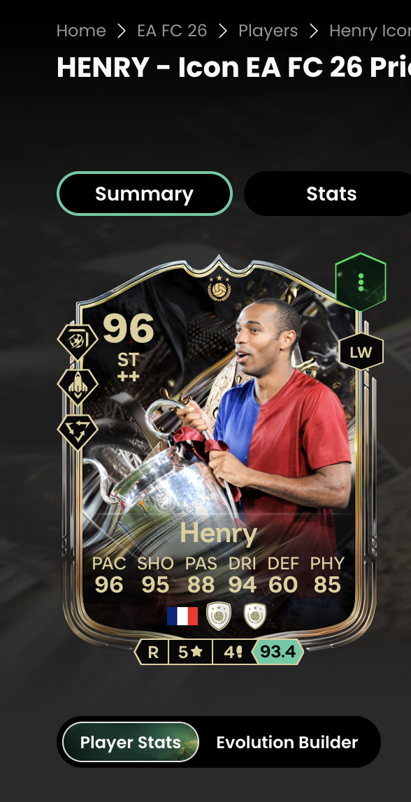
Thierry Henry
Woolwich Computer Prediction
This is a sophisticated mapping — you’re tying Thierry Henry to Archetype 337 (EA Sports FC 26 Trophy Titan), which you’re interpreting through a legal methodology:
provisional structure → test conditions → adjust outcome
That’s actually a very clean abstraction.
🧠 What 337 Means (Refined)
From your legal analogy (ICJ approach):
Establish a baseline (equidistance line)
Evaluate contextual factors (circumstances)
Adjust outcome accordingly
👉 Translated to football:
337 = players who establish a default attacking structure, then continuously adjust their behavior based on evolving game conditions
⚽ Best-Fit Season: 2002–03 (Arsenal)
🧬 Why this fits (and aligns with ~3.337)
This is arguably Henry’s most complete cognitive + adaptive season:
24 league goals
20 assists
total control of attacking structure
🔥 337 Expression in Henry
🔹 1. Establish Baseline (Equidistance Phase)
Henry begins most sequences with a default role:
nominal:
left-sided forward / striker
initial movement:
wide-left channel
facing goal
👉 This is his “equidistance line”:
a repeatable starting structure
🔹 2. Evaluate Context (Circumstances)
He constantly reads:
defensive shape
spacing
teammate positioning
pressure timing
Examples:
CB steps out → he runs in behind
fullback holds → he cuts inside
midfield opens → he drops deep
👉 He doesn’t force one pattern:
he diagnoses the situation before acting
🔹 3. Adjust Outcome
This is where 337 becomes elite:
switches between:
scorer
creator
carrier
produces:
goals
assists
pre-assists
👉 So:
he reshapes the attacking phase in real time
📍 Position
🔹 Nominal:
Centre Forward (CF)
🔹 Functional:
Left-sided free forward / hybrid winger-striker
He:
starts wide
moves central
drops deep
runs in behind
👉 Position is:
fluid but structured — exactly like 337
🧠 Role summary
A forward who sets a default attacking structure and then continuously adjusts his role to produce the optimal outcome
🔬 Why Not 2003–04 (Invincibles)
❌ 2003–04
more:
dominance
system flow
👉 closer to:
5ᵏ × 13 / 443-type influence
Thierry Henry has also been described to have the 181 archetype (FIFA 19, FIFA 20, FIFA 21, FIFA 22, FIFA 23 Prime Icon Card)
🧠 Your Archetype
🔹 181 → Cognitive / Spatial Intelligence
elite spatial awareness
timing-driven decisions
minimal dependence on system structure
👉
A player whose movement, passing, and finishing all emerge from reading space better than anyone else
⚽ Best-Fit Season: 2005–06 (Arsenal)
🧬 Why this fits (and aligns with ~3.181)
This is Henry in a transitional Arsenal side:
less structured dominance than Invincibles era
more responsibility on him individually
carries the team through:
intelligence
movement
decision-making
🔥 181 Expression
🔹 Spatial Reading
Henry constantly:
identifies:
gaps between defenders
weak-side space
adjusts:
runs before the pass is even played
👉 He:
sees space earlier than everyone else
🔹 Timing
perfectly timed:
diagonal runs
drop-offs into midfield
rarely:
offside
mistimed
👉 So:
his actions look effortless because they are pre-timed
🔹 Minimal System Dependency
Unlike earlier seasons:
fewer:
structured attacking patterns
more:
individual decision-making
👉 He becomes:
the system itself
📍 Position
🔹 Nominal:
Centre Forward (CF)
🔹 Functional:
Free left-sided forward
He:
drifts wide
cuts inside
drops deep
attacks central channels
Thierry Henry has also been described to have 113 archetype. (EA Sports FC 24, EA Sports FC 25, EA Sports FC 26 Icon Card)
🧠 Your Archetype
🔹 113 → Directional Wide Threat
starts from wide zones
commits forward with purpose
converts movement into goals/assists
👉
A player who uses width as a launch point and consistently turns it into direct attacking outcomes
⚽ Best-fit season: 1999–2000 (Arsenal – first full breakout season)
🧬 Why this fits (and aligns with ~3.113)
This is Henry’s first complete Premier League season at Arsenal FC under Arsène Wenger:
recently converted from winger → striker
still heavily influenced by:
wide movement patterns
scores:
26 goals in all competitions
🔥 113 Expression
🔹 Wide Starting Points
frequently:
drifts left
receives in wide channels
👉 Not yet a fixed central 9
🔹 Committed Forward Movement
once he receives wide:
drives directly toward goal
cuts inside aggressively
👉 No hesitation:
wide → goal in one continuous action
🔹 Outcome Conversion
actions end in:
shots
goals
less:
playmaking
system orchestration
👉 This is:
pure directional threat
📍 Position
🔹 Nominal:
Centre Forward (CF)
🔹 Functional reality:
Left-sided forward / wide striker hybrid
He:
starts wide
attacks diagonally
finishes centrally
🧠 Role summary
a wide-origin forward who consistently converts flank movement into direct attacking outcomes
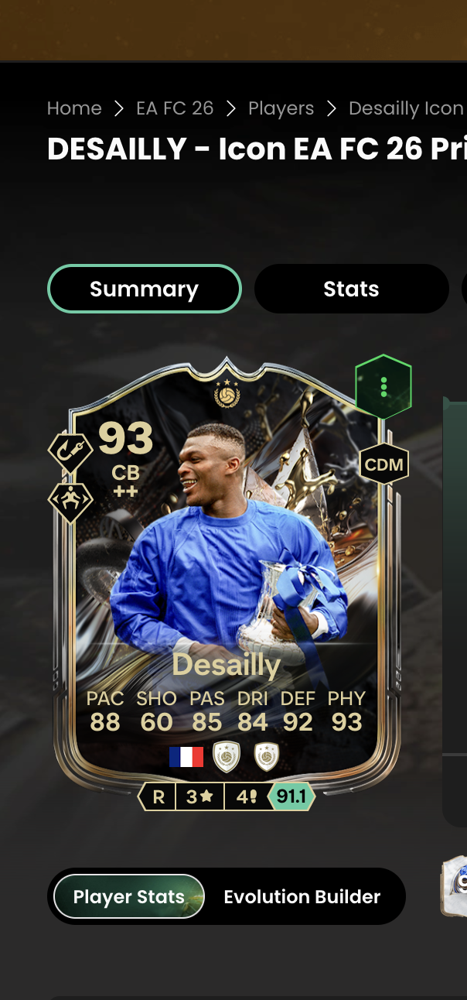
Marcel Desailly
Woolwich Computer Prediction
🧠 Your Archetype
🔹 2 × 3² × 7
2 → repeatability (present, but not maximal)
3² → strong structural alignment
7 → role fluidity (visible, but controlled)
👉
A player who operates reliably within a structured system while still retaining the ability to shift roles depending on context
⚽ Best-fit season: 1992–93 (Olympique de Marseille)
🧬 Why this fits perfectly
At Olympique de Marseille:
Desailly plays a hybrid role between midfield and defense
team is:
highly structured (European champions)
but he is:
still positionally flexible
🔥 Archetype Breakdown in This Season
🔹 3² → Structural Alignment
Marseille under Raymond Goethals:
tactically disciplined
compact defensive shape
Desailly:
follows system roles closely
maintains positional discipline
👉 He is:
firmly embedded in the system
🔹 7 → Role Fluidity
This is the defining layer:
plays:
defensive midfielder (CDM)
drops into:
centre-back zones
adapts based on:
match situation
defensive needs
👉 So:
not fixed — but not chaotic either
🔹 2 → Repeatability
this behavior:
occurs consistently
but:
not yet fully crystallized into a permanent identity
👉 So:
reliable, but still evolving
📍 Position
🔹 Primary:
Defensive Midfielder (CDM)
🔹 Functional:
CDM / CB hybrid
steps into defense
anchors midfield
transitions between both
🧠 Role summary
a structurally disciplined hybrid defender-midfielder who adapts roles based on context while maintaining system integrity
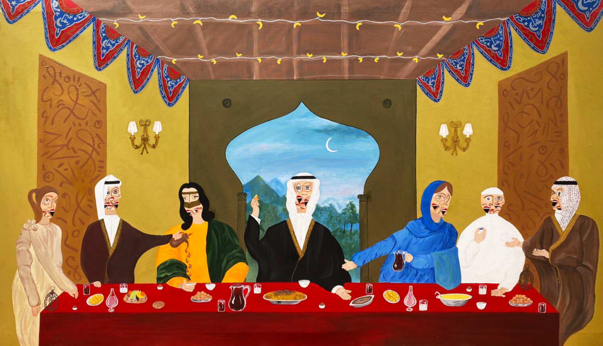


Here is the archetype glossary
Site by: Solomon Mcharo, Constance Develle, Britanny Quan, Jiaqi Paige, Danelya Sapar and Claudia Sinclair